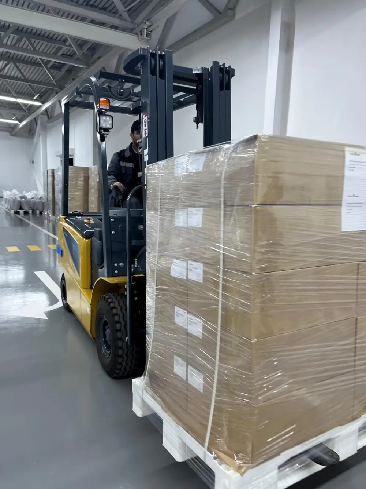

Интеграция от сада до отгрузки
Поскольку мы сами выращиваем, перерабатываем и упаковываем фундук, каждый этап находится под управлением нашей команды, с контролем, который гарантирует клиентам качество, безопасность и стабильность.

Четыре этапа производства
От цветения до контейнера: четыре контролируемых этапа

Выращивание и сбор урожая
Наши 500+ гектаров садов в Габале обслуживают агрономы с более чем 20-летним опытом, следуя экологическим принципам производства. Орехи собирают в период оптимальной зрелости.

Переработка
Колка, сортировка, калибровка, бланширование, обжарка, дробление и помол выполняются на нашем современном предприятии мощностью более 20 тонн в сутки.

Контроль качества
Каждая партия проверяется в нашей лаборатории на влажность и показатели качества, а готовая продукция проходит металлодетекцию перед упаковкой.

Упаковка и экспорт
Продукция упаковывается в вакуумные, бумажные, полипропиленовые мешки, биг-бэги или розничную упаковку, паллетируется и отгружается партиями FCL или LCL клиентам по всему миру.
Шесть видов контроля в каждой поставке
Наша система менеджмента безопасности пищевой продукции сертифицирована по FSSC 22000 и ISO 22000:2018.
Собственная лаборатория
Влажность, размер и показатели качества проверяются на месте для каждой партии.
Металлодетекция
Готовая продукция проходит металлодетекцию перед упаковкой.
Входной контроль сырья
Поступающие орехи проверяются и сортируются до запуска в производство.
Мониторинг производства
Критические параметры процесса контролируются и фиксируются на каждом этапе.
Контроль готовой продукции
Каждая партия проверяется на соответствие спецификации перед отгрузкой.
Прослеживаемость
Каждую партию можно отследить от сада до отгрузки.


Ищете надёжного поставщика фундука?
Сообщите нам продукт, спецификацию и объём. Наш отдел продаж ответит с информацией о наличии и индивидуальным предложением.